편안함의 함정, 그리고 모르는 걸 아는 것
영상은 AI를 쓰는 사람들을 깔때기 하나로 보여 주면서 시작해요. 아래로 갈수록 넓고, 위로 갈수록 좁아요. 화면에서는 맨 위 '통째로 맡김' 약 2,000만 명 층과 그 아래 '결제' 약 1억 명 층이 보여요.
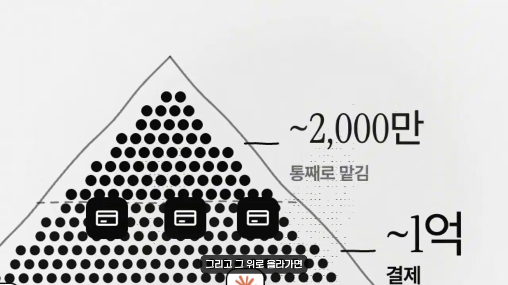
화면에 차례로 나온 숫자를 모으면 이래요. 출처는 영상에서 따로 밝히지 않았어요.
| 층 | 대략 몇 명 | 어떻게 쓰나요 |
|---|---|---|
| 전체 | 약 80억 명 | 세계 인구 전체 |
| 거의 안 써 봄 | 약 60억 명 | AI를 거의 써 보지 않았어요 |
| 무료 챗봇 | 10~20억 명 | 챗봇에 묻는 정도로 써요 |
| 결제 | 약 1억 명 | 돈을 내고 써요 |
| 통째로 맡김 | 약 2,000만 명 | 몇 주 걸리던 일을 AI에게 통째로 맡겨요 |
위로 올라가는 방법은 보통 더 많이, 더 크게 맡기는 거라고 생각하죠. 틀린 말은 아니지만, 맡기는 일이 늘면 아무도 말해 주지 않던 문제가 생겨요. 영상은 그 문제를 피하는 일곱 가지를 일의 흐름 순서로 짚어요. 아래 그림이 전체 지도예요.
잘 맞을수록 덜 보게 돼요
예전 AI는 엉뚱한 답을 하거나 코드가 아예 안 돌아가서, 자연스럽게 한 번 더 봤어요. 요즘 모델은 글도 잘 쓰고 대부분 맞아요. 바로 그래서 다시 볼 이유가 사라졌다는 게 영상의 첫 지적이에요. 빠르고 깔끔한 편안함이 경계를 가장 먼저 풀어요.
아래 화면은 그 과정을 계단으로 그렸어요. 왼쪽 위 '대충'에서 한 칸 내려온 '구조만' 계단에 사람이 서 있고, 아래쪽으로 다음 계단이 이어져요. 지난번이 괜찮았으니 이번엔 대충 읽고, 다음엔 구조만 훑고, 그다음엔 결과만 확인하는 거예요.
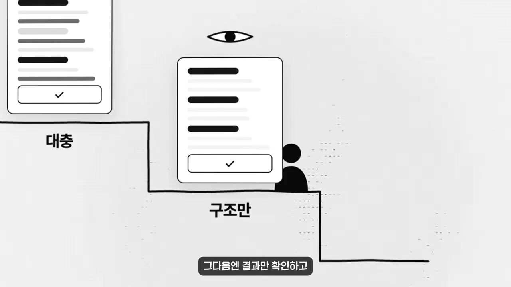
그래서 영상이 세우는 기준은 이거예요.
AI의 도움을 받아도 설명할 수 없다면 그건 이미 내 결과물이 아닌 겁니다.
— 영상 01:40
에이전트를 열 개, 스무 개 돌려도 결과를 보는 눈은 내 눈 하나뿐이에요. 잘 쓰는 사람들은 다시 볼 이유를 일부러 만들어 둬요. 뒤의 항목들이 그 방법이에요.
다 알 필요는 없어요, 모르는 걸 알면 돼요
그럼 AI가 만든 걸 전부 이해해야 할까요? 영상은 아니라고 해요. 프로젝트가 조금만 커져도 불가능하거든요. 근거로 보여 주는 화면이 Claude Code 팀의 글이에요. 굵은 글씨 부분은 팀이 전체를 머릿속에 들고 있지 않고, 필요할 때 그 부분만 Claude에게 설명해 달라고 해서 이해를 다시 쌓는다는 내용이에요.
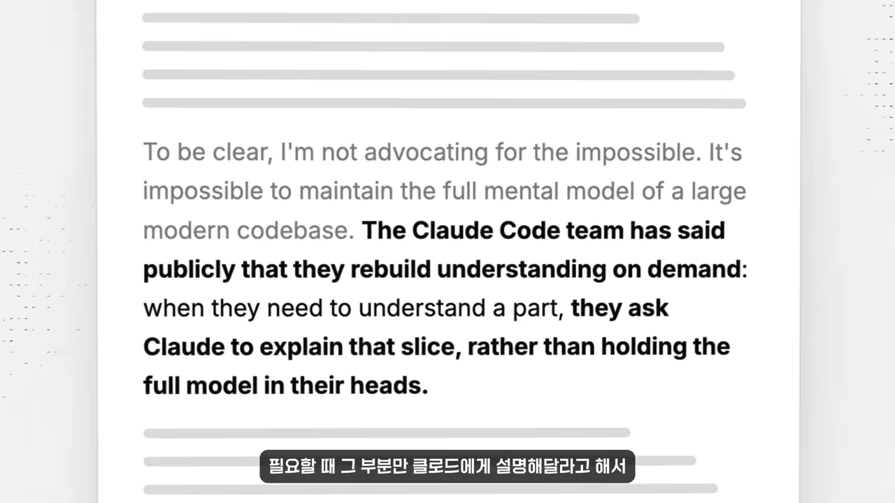
맡기는 기준도 단순하게 잡아요. 왼쪽 '틀려도 OK' 쪽에는 별점 4.5짜리 숙소 세 곳이 나란히 있고, 오른쪽 '책임' 쪽에는 돈과 설계도 앞에 자물쇠와 사람이 있어요.
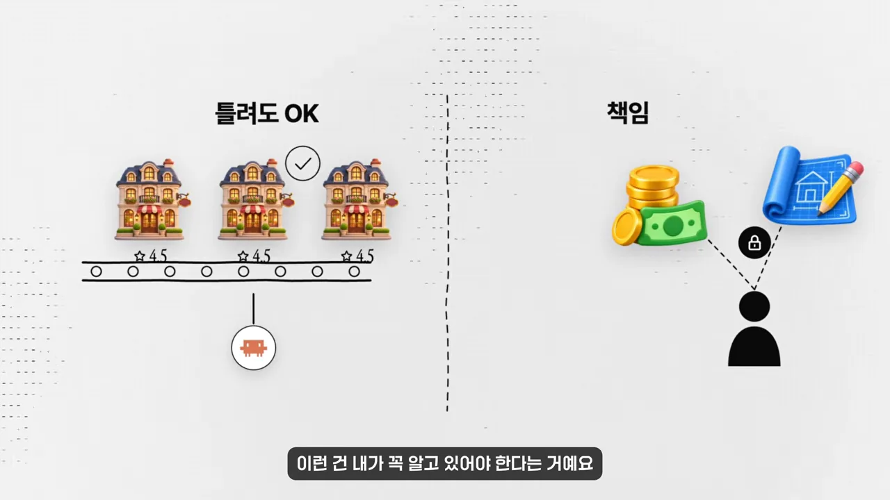
시키기 전에: 내 예상과 세 가지 질문
여기부터는 작업을 시키기 전이에요. 잘 쓴 답을 한 번 읽고 나면 다른 가능성이 잘 떠오르지 않아요. 그럴듯한 답이 먼저 자리를 잡아 버리는 거예요. 화면은 이걸 답 문서 밑에 내려진 닻으로 그려요.
내 예상을 먼저 적어요
그래서 잘 쓰는 사람은 시키기 전에 '내 생각엔 답이 이럴 것 같다'를 먼저 적어요. 화면 왼쪽 '내 예상' 메모와 오른쪽 AI의 답이 점선 두 줄로 이어지고, 한 줄에는 체크, 한 줄에는 엑스가 붙어 있어요.
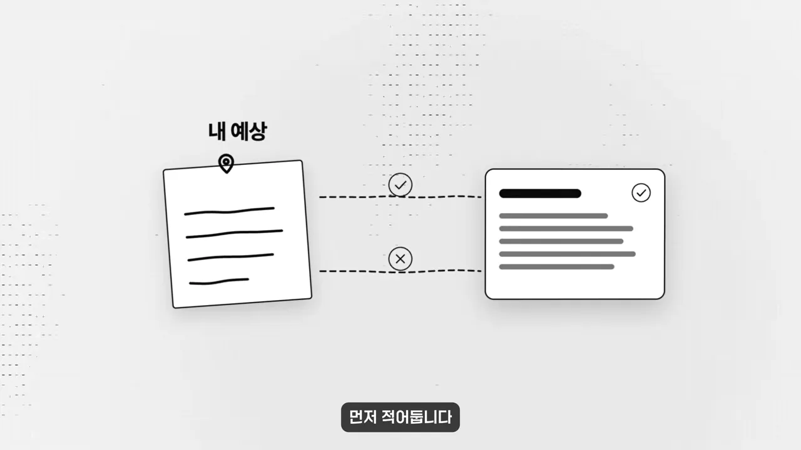
감이 아예 안 잡히면 반대로 가요. 내가 아는 걸 전부 알려 주고, 내가 모르는 걸 찾아 달라고 하면 돼요. 그리고 시키기 전에 스스로 한 번 반문해 봐요. 지금 생각을 도와 달라는 건지, 생각을 대신해 달라는 건지요. 둘 다 괜찮지만 내가 어느 쪽인지는 알아야 해요.
답을 받은 뒤에는 '이 답이 틀렸다면 무엇이 사실이어야 할까?'를 떠올리고 그걸 직접 확인해요. AI가 확신한다고 말하는 것보다 내가 한 번 확인한 게 훨씬 믿을 만해요.
AI는 되묻지 않아요
예전에는 일을 애매하게 시키면 누군가 '그래서 정확히 뭘 원하는 거예요?'라고 물어 줬어요. 그 질문을 받고서야 내 생각이 아직 정리되지 않았다는 걸 알았죠. AI는 대부분 되묻지 않고 빈칸을 알아서 채워서, 완성된 것처럼 내놔요. 결과물은 멀쩡해 보여도 그 안의 생각은 흐릿한 채예요.
이 빈칸은 내가 원하는 게 뭔지에 관한 것이라 나 말고는 누구도 채울 수 없어요. 그래서 프롬프트를 보면 내가 문제를 얼마나 이해하는지가 그대로 드러나요. 영상은 시키기 전에 화면에 띄운 세 줄만큼은 정리해 두라고 해요.
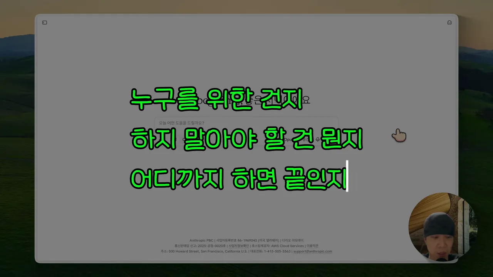
일하는 동안: 초록불을 믿지 않기
이제 작업이 진행되는 시점이에요. AI를 잘 쓰는 사람들이 가장 강조하는 건 Claude에게 스스로 확인할 방법을 주라는 거예요. 화면 가운데 Claude 아이콘을 둘러싸고 코드, 편집, 결과 화면 아이콘이 고리로 이어져 있어요.
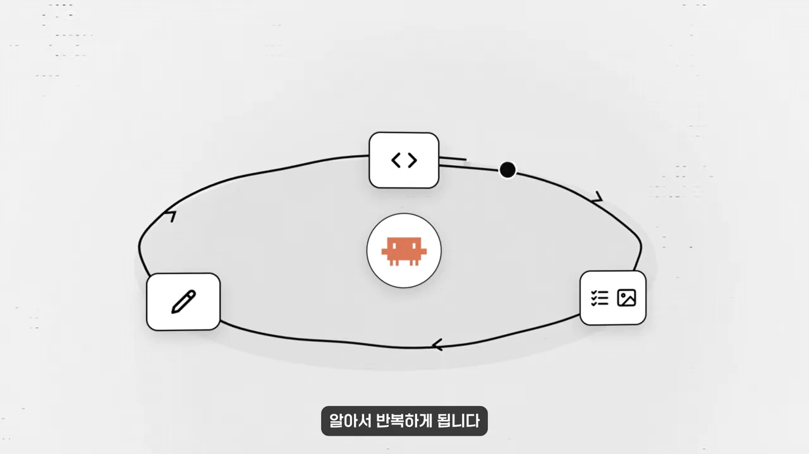
초록불이 많다고 다 된 건 아니에요
문제는 테스트 만들기가 너무 쉬워져서 초록불이 아주 많이 뜬다는 거예요. 보는 사람은 그걸 보고 다 됐다고 느껴요. 아래 화면은 '기능'과 '테스트'가 한 설계도에서 나와 함께 초록 체크를 받는 모습이에요. 둘레의 큰 원 밖에는 물음표 칸이 가득해요.
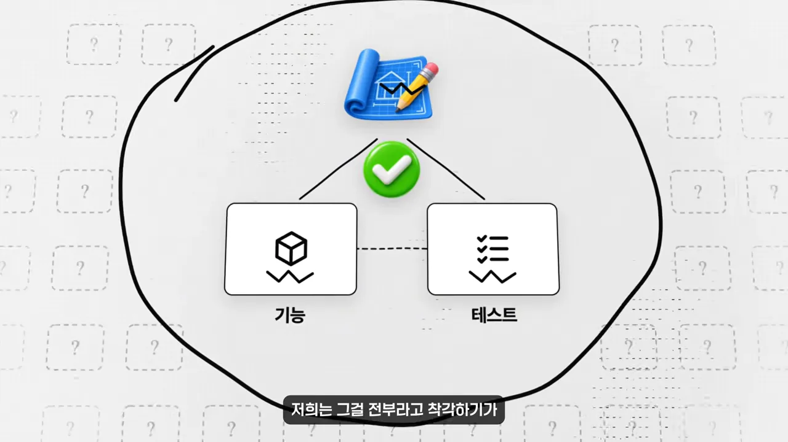
그래서 Claude가 다 했다고 알려 주면 요약부터 읽지 말아요. 아래 터미널 그림처럼 ① 실제로 무엇을 실행했는지(npm test), ② 어떤 결과가 나왔는지(247 passed)부터 봐요. 오른쪽 위 작은 카드가 요약인데, 번호 2가 붙어 있어요. 요약은 그다음이라는 뜻이에요.
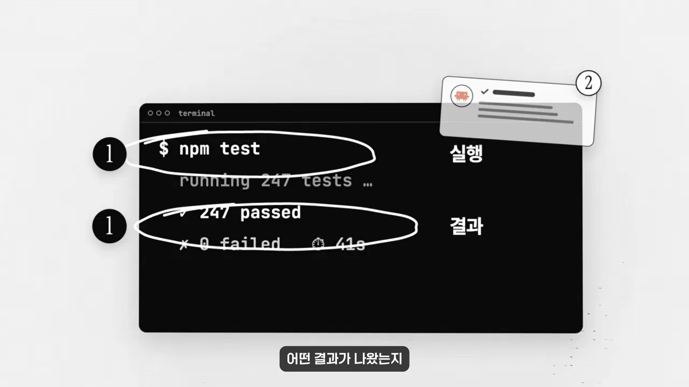
코드가 아니어도 똑같아요. 앱 리뷰 수십 개를 요약해 달라고 했다면 원본 두세 개는 직접 열어 봐요. 그리고 내가 예상한 결과와 어떻게 다른지 확인해요.
끝난 뒤: AI가 대신 정한 것과 나만의 기준
작업이 끝난 시점이에요. 긴 작업을 맡기면 Claude는 그 사이에 많은 걸 혼자 정해요. 화면은 그걸 세 가지로 그려요. 왼쪽 시계가 '기본값', 가운데 점 묶음이 '범위', 오른쪽 A·B 갈림이 '선택'이에요. 그런데 셋 다 물결선 아래에 잠겨 있어요.
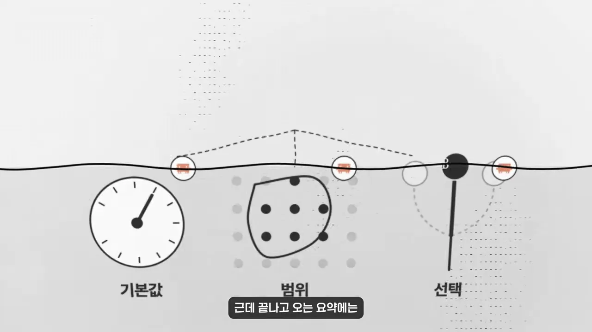
그래서 리뷰를 해도 내가 이미 알던 범위 안에서만 확인하게 돼요. 영상은 이렇게 물어보라고 해요. 첫 질문은 Claude 입력창 위에 세 줄로 적혀 있어요.
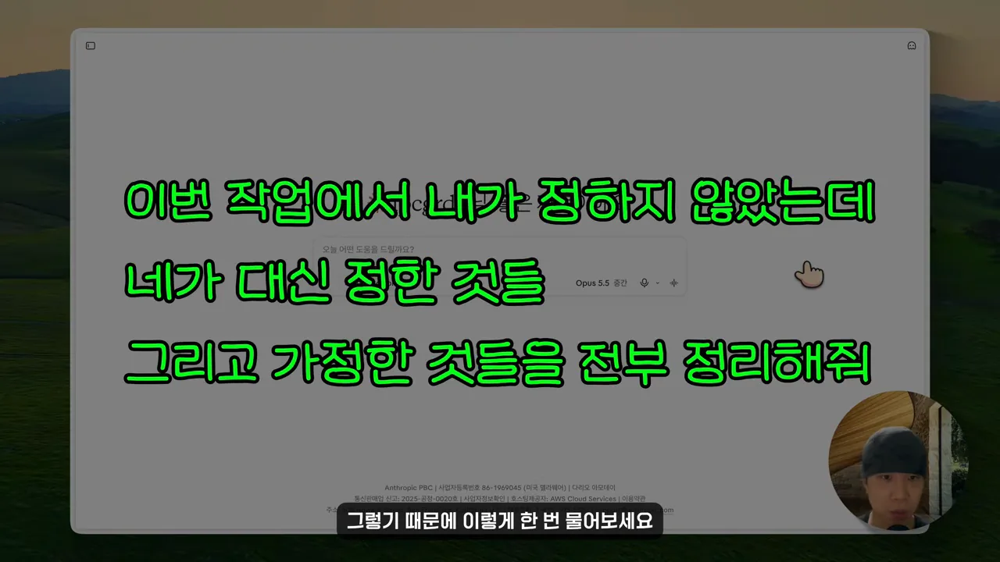
두 번째로 추천하는 질문은 더 짧아요.
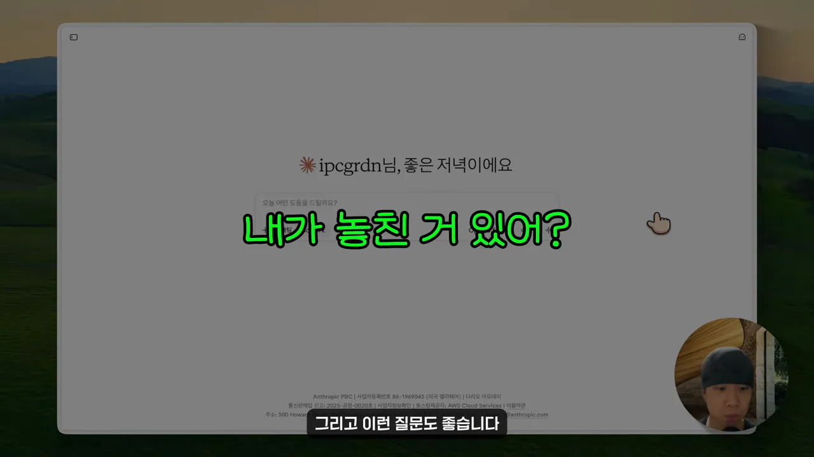
리뷰할 때는 아무 줄이나 골라 '이건 왜 이렇게 했지?'를 스스로 설명해 봐요. 막히면 아직 내 것이 아니에요. 이걸 AI가 맞았는지 틀렸는지 가리는 검사로 여기지 말라는 게 영상의 당부예요. 내 이해를 넓히고 지식을 쌓는 과정으로 봐야 내가 성장해요.
에이전트가 만들어내는 양이 내가 확인할 수 있는 양보다 많아지면 그건 더 이상 리뷰가 아닙니다. 그냥 잘 됐기를 기도하는 거죠.
— 영상 06:41
그럴 땐 에이전트를 하나 더 돌리지 말고, 확인 기준을 더 촘촘하게 하거나 속도를 늦춰야 해요.
깔끔함은 더 이상 신호가 아니에요
예전에는 깔끔하게 정리된 결과물이면 공을 들였다는 게 보였어요. 이제는 AI가 만든 모든 게 깔끔하고 자신감 있게 나와요. 그래서 깔끔함만으로는 좋은지 나쁜지 알 수 없어요. 남는 건 좋은 걸 골라내고 별로인 걸 별로라고 알아보는 나만의 기준이에요.
이 눈은 저절로 생기지 않아요. 별로인 걸 보면 다시 만들어 달라고만 하지 말고 왜 별로인지 정리해요. 한 걸음 더 가면 그 이유를 규칙으로 남겨요. 화면에는 맨 위에 CLAUDE.md 파일, 아래에 '스킬'과 '훅' 버튼이 놓여 있어요.
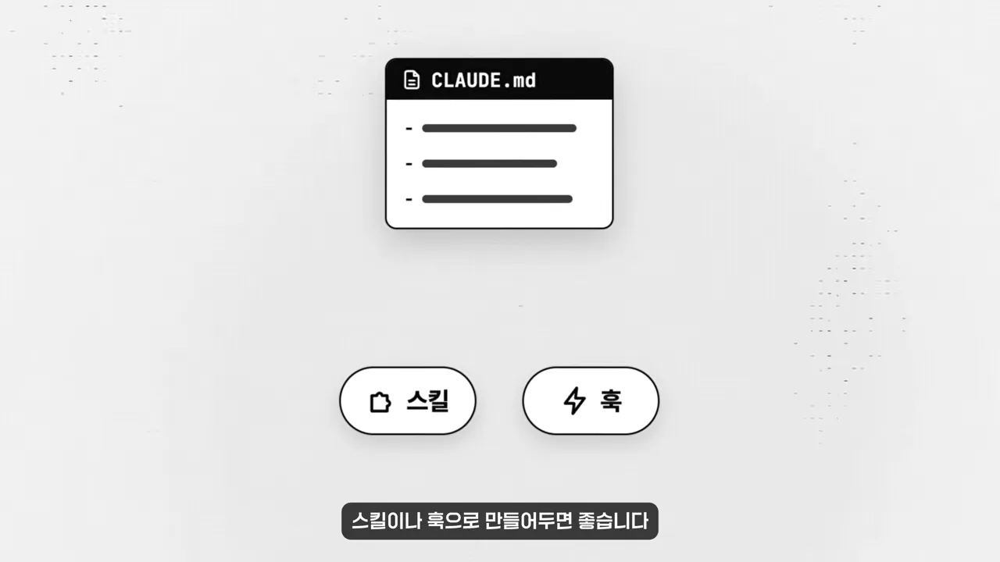
그래도 가끔 직접 해 봐야 하는 이유
여기까지 들으면 '1~2년 뒤면 AI가 이런 것도 알아서 잡아내지 않을까?' 싶을 수 있어요. 영상도 상당 부분 동의해요. 그런데 역설이 하나 있어요. 아래 그래프에서 위로 올라가는 실선과 아래로 내려가는 점선이 가운데 점선 기준선에서 엇갈려요.
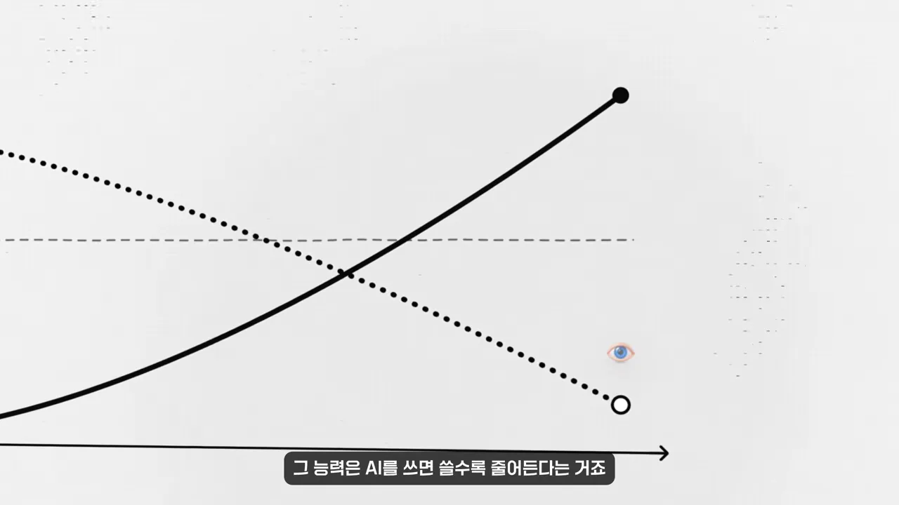
그리고 아무리 좋은 모델이 나와도 대신 답할 수 없는 질문이 있어요. 화면에 초록 글씨로 '무엇을 만들지', '왜 만드는지'가 적히고, 이어서 '그걸 위해 무엇을 포기할지'가 나와요.
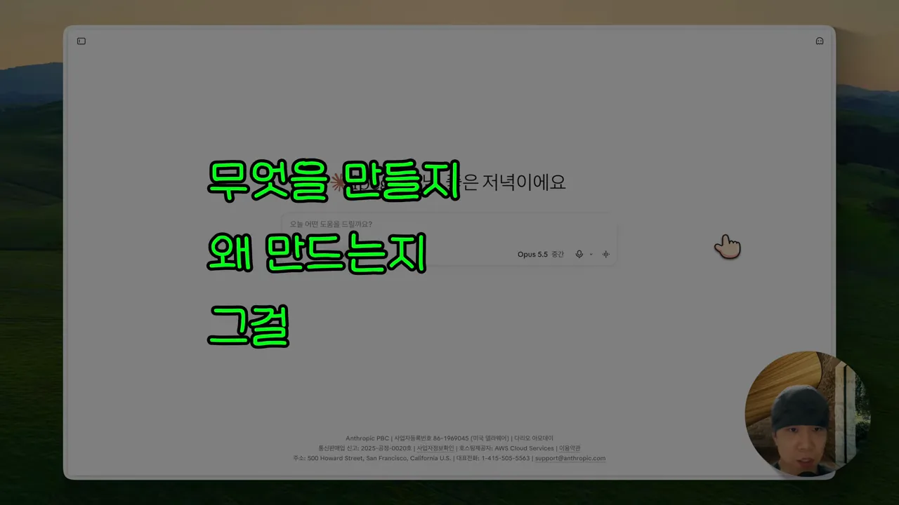
영상의 마지막 말은 이래요. AI는 앞으로 더 많은 걸 대신하게 될 거예요. 그럴수록 그 안에서 내가 무엇을 생각하고 있는지가 더 중요해져요.